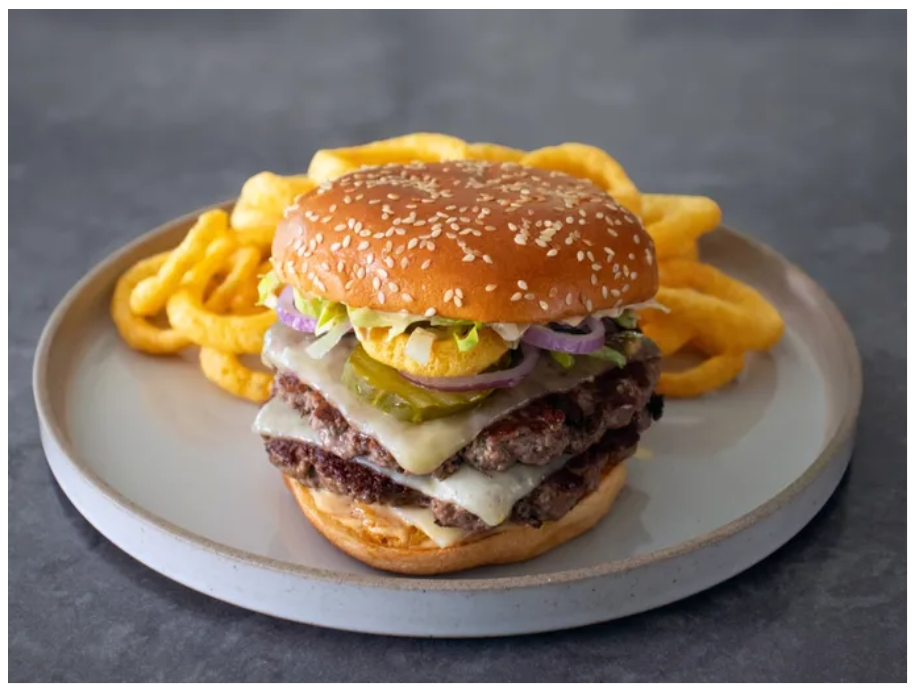

Home
Bigger Better Big Arch Burger

Ingredients:
Sauce:
- 1/2 cup mayonnaise
- 2 tablespoons ketchup
- 1 tablespoon yellow mustard
- 2 tablespoons sweet pickle relish
- 1 teaspoon apple cider vinegar
- 1/2 teaspoon smoked paprika
- 1/2 teaspoon garlic powder
- 1 pinch cayenne
Burger:
- 4 sesame seed burger buns
- 2 1/2 pounds ground beef
- 1 teaspoon kosher salt
- 1 teaspoon ground black pepper
- 12 slices white Cheddar cheese
- 1/2 cup thinly sliced raw red onion
- 12 dill pickle slices
- 24 Funyuns® onion-flavored rings, or 1 1/2 cups crispy fried onions
- 2 cups thinly sliced iceberg lettuce
Directions:
- For sauce, stir mayonnaise, ketchup, yellow mustard, pickle relish, vinegar, smoked paprika, garlic powder, and cayenne together in a small bowl; cover and refrigerate until needed. Sauce will be even better if it's made ahead of time.
- Divide ground beef into 8 (5-ounce) portions. Press each portion into a patty between plastic wrap to approximately 1/4-inch thick. After pressing, use your fingers to smooth the edges so jagged pieces don't break off when cooking. Refrigerate until needed.
- Spread the inside of each bun half with about 1 teaspoon sauce. Heat a large cast iron pan, heavy duty stainless steel pan, or griddle plate over medium heat. When the pan is hot, toast the buns lightly on both sides. Remove to a plate and reserve until needed.
- Increase the heat to high, and once hot, place down 4 patties, and press lightly with a spatula to make sure they are flat against the bottom of the pan. Cook the first side until the meat around the bottom edge starts to lose its raw color, about 2 minutes. During this time, season patties with salt and pepper.
- Use a metal spatula to loosen patties from the pan around the edges and then flip over. Top with a slice of Cheddar, and cook until burgers are cooked through and cheese is melted, 1 to 2 minutes. Remove to a plate, and cover loosely with foil. Carefully wipe out the skillet to remove excess grease, then cook the remaining 4 patties and Cheddar cheese. If at any time the pan starts smoking too much, reduce heat to medium-high.
- Once all burgers are cooked, spread all bun halves generously with sauce. On each bottom half, place red onions, then 3 Funyuns, then 1 slice of cheese. Top with 2 hot burgers. Top each burger with 3 pickle slices, then more red onions, and Funyuns. Finish with iceberg lettuce; place top bun over everything and press firmly.
Any Recipes: